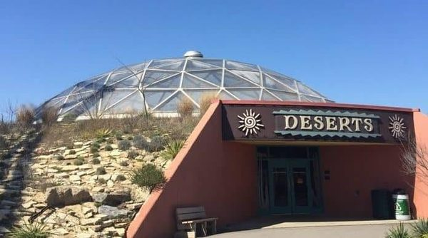

Deserts, Indianapolis Zoo
Indianapolis Zoo · Photo Tour #9

Photo Tours #9, Deserts-Indianapolis Zoo, Added as part of the opening of the new location for the Indianapolis zoo back in 1988, The Deserts building is 1 of 3 Desert Domes in the United States and this one is considered the oldest of Americas Desert Domes,
When you first enter the desert you will notice the natural light and temperatures that hits you and the temperature stays around the 80° mark, In this desert 5/6 of the habitats are open topped and blends in with the rocky environments, be sure you look for the Rhinoceros Iguana,
Spiny-Tailed Lizard & Egyptian tortoises in the first one, the next one also contains more lizards and tortoises like the Blue-Tongue Skink, Bearded Dragon, Grand Cayman Blue Iguana and Radiated Tortoises, Enclosure number 3 has a Great Plated Lizard,
Leopard Tortoises & a Colorado River Toad and then the stars of the Desert which is 2 enclosed habitats containing Meerkats & now Sand Cats ( my visit to Indy was in 2022 & they added the Sand Cats not to long after my visit ) The 4th Open Topped enclosure has more Iguanas,
Tortoises and more and then you are entered the Extreme Snakes Room which is home to the Biggest,
Fastest and has the deadliest venom of snakes of the World like the Reticulated Python & Black Mamba for example and then there’s another dark hallway with more terrariums for reptiles both in Deserts and not Desert related,
after seeing the snakes you are pushed back out into the desert to see the final enclosure which is a little river bed for the Australian Snake-Necked Turtle,
This building has to be one of my favorite areas in Indy and I recommend it for you to see it ( especially if you’re into reptiles ) and just a reminder the building can be really hot though.
Louie posted this on Facebook — open the original post →